Code
library(tidyverse)
library(forecast)The values in a time series are often not independent – that can be a good thing to find out – understanding what the autocorrelation is like can often tell you a lot about what the underlying processes looks like.
Have a look at Chapter six from Cowpertwait and Metcalfe (2009). It’s OK to skim the readings in this book. It’s not a great book for our purposes as many of you haven’t taken linear algebra and the book occasionally goes that way. But it’s useful to hum your way through the chapter nonetheless.
I’ll use tidyverse (Wickham 2023) some. And we will use the forecast (Hyndman et al. 2026) package as well. I’ll grab a function or two from gridExtra (Auguie 2017) and broom (Robinson et al. 2026) as well.
library(tidyverse)
library(forecast)Last week, we described the auto regressive AR(\(p\)) model where the values of \(y\) are a function of the prior values of \(y\). We can extend this to more time steps and call this an autoregressive model of order \(p\) as AR(\(p\)):
\[ y_t = \sum\limits_{i=1}^p \phi_i y_{t-i} + \epsilon_t \]
Thus, an AR(2) model would be \(y_t = \phi_1 y_{t-1} + \phi_2 y_{t-2} + \epsilon_t\) where parameters are as we’ve previously defined them.
The moving average (MA) model is a similar concept to the AR(\(p\)) model but this time the coefficient (\(\theta\) instead of \(\phi\)) affects the residuals and not \(y\) itself. The time series therefore is an unevenly weighted moving average of the residuals \(\epsilon_t\). The first-order moving average, or MA(1), model is given by \(y_t = \theta_1 e_{t-1} + \epsilon_t\) where \(\theta\) is a coefficient ranging from -1 to 1.
\[y_t = \theta \epsilon_{t-1} + \epsilon_t\] But, we can never observe the values of \(\epsilon_t\) in real time (they are errors, right?), so it is not really a regression in the usual sense.
Let’s look at an implementation of a MA(1) process with a loop. I’m going to plot the data, the ACF and the PACF all in one figure.
n <- 100
x <- 1:n
theta <- 0.8
epsilon <- rnorm(n=n)
y <- numeric(length = n)
for(i in 2:n){
y[i] <- theta * epsilon[i-1] + epsilon[i]
}
simpleLayoutMatrix <- matrix(c(1,1,2,3),nrow = 2,ncol = 2,byrow = TRUE)
p1 <- ggplot() + geom_line(aes(x=x,y=y)) + labs(x="Time")
p2 <- ggAcf(y) + labs(title=element_blank())
p3 <- ggPacf(y) + labs(title=element_blank())
gridExtra::grid.arrange(p1,p2,p3,
layout_matrix=simpleLayoutMatrix)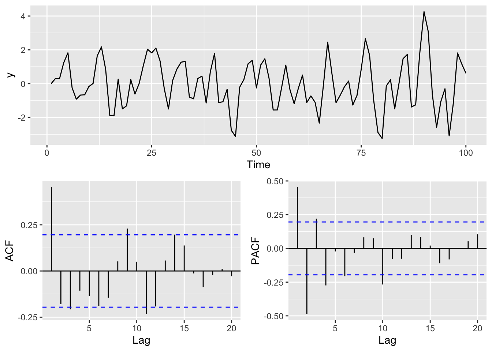
This is an interesting pattern and characteristic of a MA(1) model. Note the strong first order autocorrelation. It doesn’t have the decay that you have in an AR(1) model. That is characteristic of the MA processes. The PACF shows a strong negative correlation at lag 2 and then oscillates. This is characteristic behavior of the MA process as well but the reasons take a little work to wrap your head around. This is the best explanation I’ve seen for why this occurs that doesn’t invovle a bunch of linear algebra.
As with AR(\(p\)), we can extend this to longer lags and call this MA(\(q\)): \[ y_t = \sum\limits_{i=1}^q \theta_i \epsilon_{t-i} + \epsilon_t\]
What’s next? You guessed it an ARMA(\(p,q\)). The ARMA model is simply the merger between AR(\(p\)) and MA(\(q\)) models. The order of the ARMA model is given in parentheses where \(p\) is the autoregressive order and \(q\) the moving-average order. A common model is the ARMA(1,1) model \(y_t = \phi_1 y_{t-1} + \theta_1 \epsilon_{t-1} + \epsilon_t\). But this can be extended to longer lags as above: \[ y_t = \sum\limits_{i=1}^p \phi_i y_{t-i} + \sum\limits_{i=1}^q \theta_i \epsilon_{t-i} + \epsilon_t\]
Let’s look at an ARMA(1,1) model via simulation:
n <- 100
x <- 1:n
epsilon <- rnorm(n=n)
y <- numeric(length = n)
phi <- 0.5
theta <- 0.8
for(i in 2:n){
y[i] <- phi * y[i-1] + theta * epsilon[i-1] + epsilon[i]
}Here is a plot of the time series, the ACF and the PACF.
p1 <- ggplot() + geom_line(aes(x=x,y=y)) + labs(x="Time")
p2 <- ggAcf(y) + labs(title=element_blank())
p3 <- ggPacf(y) + labs(title=element_blank())
gridExtra::grid.arrange(p1,p2,p3,layout_matrix=simpleLayoutMatrix)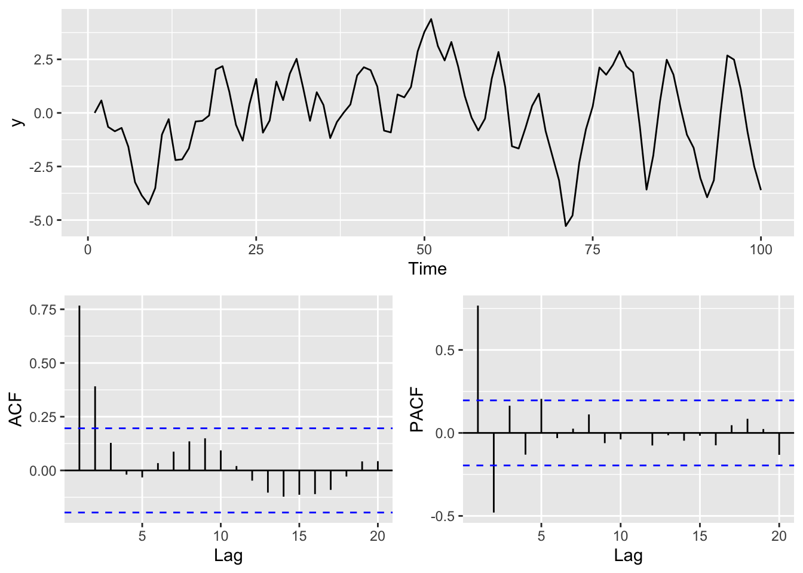
Now, in general we like to use models like this so that we can better understand the system by revealing something about the mechanisms that create the persistence in the data. In the case of the ARMA(1,1) model you can imagine a situation where \(y_t\) has an internal dynamic that creates an AR(1) process and something external that creates the MA(1) process. For instance, let’s imagine that we are measuring the growth of a perennial plant that requires a long growing season in \(t-1\) to condition growth the following year (\(t\)). Perhaps it requires a lot of growing degree days in the current year \(t\), and its internal biological needs rely on last year’s stored energy \(t-1\) for kicking off growth at the beginning of the year \(t\). If growing degrees themselves are autocorrelated, perhaps because of atmospheric dynamics, you’d have internal autocorrelation and external autocorrelation. This might well create an ARMA(1,1) process in growth.
As we get into higher order models this kind of understanding can be difficult to develop – so don’t overfit models! Just because a long time series (large \(n\)) fits a high order model (like an AR(20)), it doesn’t mean that is the best model if there is no plausible mechanism to explain it.
Never forget the sage words of Box: “…essentially, all models are wrong, but some are useful.”
So far, we’ve worked with AR(\(p\)) and MA(\(q\)) models, and their combination: ARMA(\(p, q\)) models. These assume the time series is stationary—its properties (like mean, variance, and autocorrelation) don’t change over time.
ARMA (Autoregressive Moving Average) models require stationarity because their structure assumes that the statistical properties of the time series remain constant over time. This includes a constant mean, constant variance, and a constant autocorrelation structure.
The coefficients in ARMA models are fixed and describe how current values depend on past values (AR terms) and past errors (MA terms). If the time series is non-stationary, these relationships may change over time, making the model unreliable.
The AR terms relate a value to its previous values, and the MA terms relate it to previous shocks (errors). These relationships are only meaningful when the process is consistent over time—i.e., stationary.
The validity of statistical inference and forecasting depends on the assumption that the underlying process does not change. Non-stationarity undermines this assumption and can lead to misleading predictions.
The theoretical behavior of the autocorrelation function (ACF) and partial autocorrelation function (PACF) in ARMA models is derived under the assumption of stationarity. Without it, these properties may not be stable or interpretable.
In practice, if a time series is non-stationary, we typically difference the data to induce stationarity before fitting an ARMA model. This leads to the ARIMA model, where the “I” stands for “Integrated” (i.e., differenced).
Many environmental time series show non-stationarity. For example:
Long-term trends in temperature or sea level,
Gradual shifts in nutrient concentrations,
Snowpack accumulation over the season.
In those cases, ARMA models are often not appropriate becasue the structure they rely on doesn’t hold.
To deal with that, we often difference the series:
\[
y'_t = y_t - y_{t-1}
\]
This removes linear trends and helps stabilize the mean (refer to last week’s Stationarity is dead section). If the differenced series is stationary, we can model it using ARMA tools. That’s the idea behind ARIMA models.
We aren’t going to go into too much depth on ARIMA but we will see the acronym a lot and it’s good to aware of differencing as a tool. The important take away is that ARIMA(\(p, d, q\)) means:
Difference the series d times,
Then fit an ARMA(p, q) model to the result.
This is why ARIMA models are often described as ARMA models applied to differenced data.
We’ll simulate a process with an AR(1) and MA(1) component, plus a drifting mean, so it’s non-stationary. This mimics a situation where ARMA wouldn’t work directly but an ARIMA model might.
set.seed(123)
n <- 100
x <- 1:n
y <- numeric(n)
epsilon <- rnorm(n)
phi <- 0.9 # AR(1)
theta <- 0.2 # MA(1)
drift <- 0.8 # linear trend (makes the process non-stationary)
# Simulate ARMA(1,1) with drift - aka ARIMA(1,1,1)
y[1] <- 0
for (i in 2:n) {
y[i] <- drift + phi * y[i-1] + theta * epsilon[i-1] + epsilon[i]
}
ggplot() + geom_line(aes(x=x,y=y)) +
labs(x="time", title = "Simulated Non-Stationary ARMA(1,1) with Drift")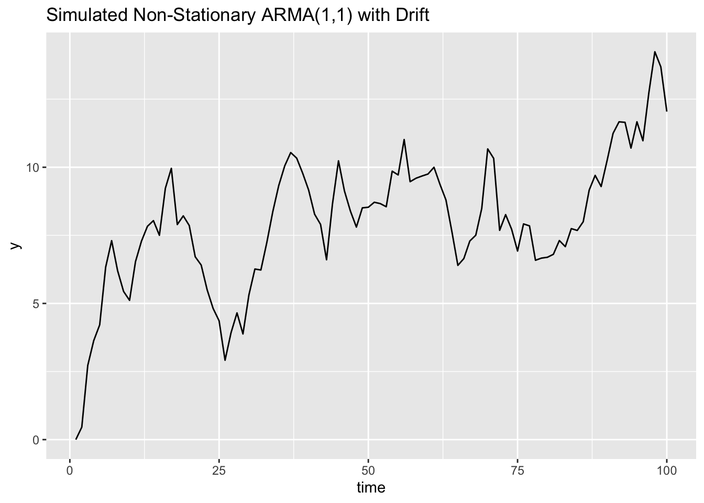
You’ll see the series drifts upward over time—it’s not stationary.
Now difference it:
y_diff <- diff(y) # note length of y compared to y_diff!
ggplot() + geom_line(aes(x=x[-1],y=y_diff)) +
labs(x="time", title = "Differenced Series (Looks Stationary)")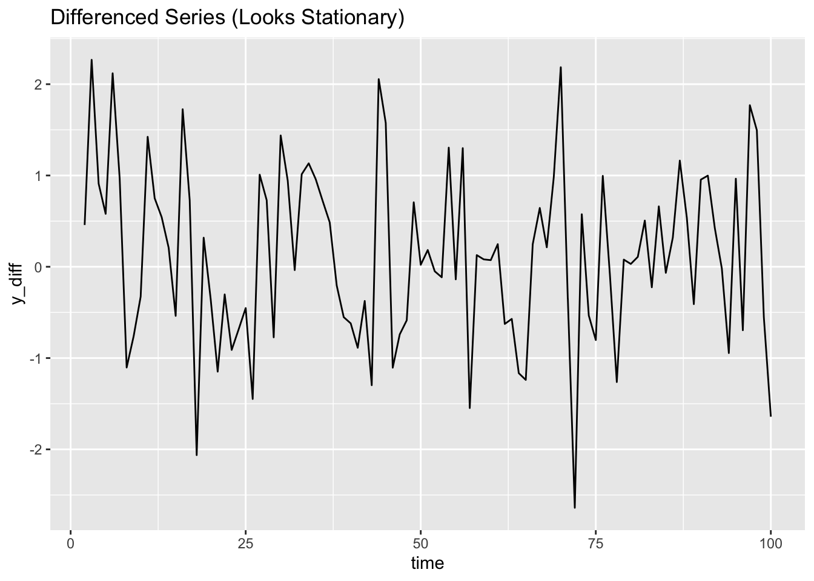
The differenced version appears stationary. At this point, we could try fitting an ARMA model to it.
We won’t go further into ARIMA models in this course, but understanding that they extend ARMA by differencing non-stationary series gives you a strong foundation for future time series work.
So given that quick intro to ARMA let’s try a baby example of fitting an ARMA model and finding the least bad one. We’ll use the arima.sim function to simulate a ARMA(1,1) time series.
n <- 500
x <- 1:n
y <- arima.sim(list(ar = 0.8, ma = 0.6), n = n)And a plot.
p1 <- broom::tidy(y) %>% ggplot(mapping = aes(x=index,y=value)) +
geom_line() +
labs(x="Time")
p2 <- ggAcf(y) + labs(title=element_blank())
p3 <- ggPacf(y) + labs(title=element_blank())
gridExtra::grid.arrange(p1,p2,p3,layout_matrix=simpleLayoutMatrix)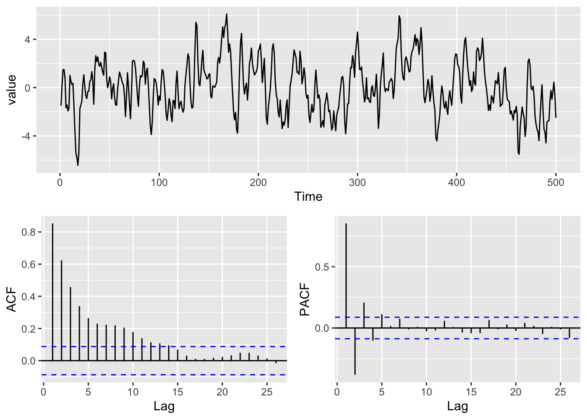
Now let’s do some modeling of that series with several different formulations of the ARMA process. Here we are going to fit parameters (e.g., \(\phi\) and \(\theta\)) to a time series (\(y\)) for a specified model (e.g., an ARMA(1,1) model). The parameters are fit by maximum likelihood (typically) and just like with most models we can assess the goodness of fit. Here we will use the Arima function in forecast (which is just a slightly fancier version of the arima function in the stats package).
We will try to fit ARMA(\(p\),\(q\)) with \(p\) and \(q\) ranging from zero to two. Note that we are leaving a zero for the differencing term because \(y\) is stationary.
arma00 <- Arima(y,order = c(0,0,0))
arma10 <- Arima(y,order = c(1,0,0))
arma20 <- Arima(y,order = c(2,0,0))
arma01 <- Arima(y,order = c(0,0,1))
arma02 <- Arima(y,order = c(0,0,2))
arma11 <- Arima(y,order = c(1,0,1))
arma21 <- Arima(y,order = c(2,0,1))
arma12 <- Arima(y,order = c(1,0,2))
arma22 <- Arima(y,order = c(2,0,2))Here is what the ARMA(1,0) aka AR(1) spits out.
arma10Series: y
ARIMA(1,0,0) with non-zero mean
Coefficients:
ar1 mean
0.8547 0.0392
s.e. 0.0231 0.3389
sigma^2 = 1.246: log likelihood = -764.01
AIC=1534.03 AICc=1534.08 BIC=1546.67Note that we get estimates of the coefficients (here \(\phi_1\) and a constant) and their standard errors. We also get the log likelihood (\(l\)) which is a measure of how strongly the model fits the data with smaller numbers indicating a better fit. With the number of parameters in the model we can get the AIC (\(-2l + 2k\), where \(k\) is the number of parameters in the model) and with the sample size (\(n\)) we can get BIC (\(-2l + ln(n)k\)). The AIC and BIC penalize the log likelihood for more complex models. I like thinking of AIC as saying, “Look friend, find me a model that fits well but isn’t overfit just because I threw it a lot of parameters.” BIC says something similar but adds in the sample size, “Look friend, find me a model that fits well but isn’t overfit just because I threw it a lot of parameters and had a huge sample size.” In our models above the sample sizes were all the same so the AIC and BIC will be proportional. When comparing models, the smaller the AIC or BIC the better. There is a lot more you can read about on this stuff but we can leave it alone for now.
Let’s see how the ARMA(1,0) fits these data visually.
dat <- tibble(x=x,y=arma10$x,yhat=arma10$fitted)
dat %>% pivot_longer(cols=2:3) %>%
ggplot(mapping = aes(x=x,y=value,color=name)) +
geom_line() +
labs(x="Time")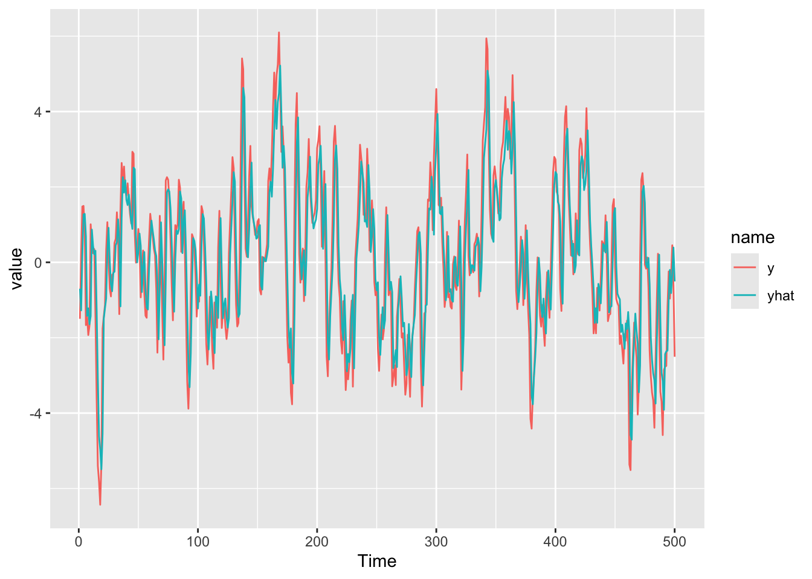
Wow! Pretty impressive. The R\(^2\) on that model is excellent at 0.731.
Let’s evaluate each of those models using BIC.
armaBIC <- BIC(arma00,arma10,arma20,arma01,arma02,arma11,arma21,arma12,arma22)
armaBIC df BIC
arma00 2 2194.669
arma10 3 1546.671
arma20 4 1467.577
arma01 3 1704.234
arma02 4 1537.683
arma11 4 1431.581
arma21 5 1437.788
arma12 5 1437.789
arma22 6 1442.821From the BIC values it looks like the ARMA(1,1) model is one to investigate.
arma11Series: y
ARIMA(1,0,1) with non-zero mean
Coefficients:
ar1 ma1 mean
0.7298 0.5939 0.0541
s.e. 0.0332 0.0396 0.2586
sigma^2 = 0.978: log likelihood = -703.36
AIC=1414.72 AICc=1414.8 BIC=1431.58Those coefs are very close to what we used in our simulation. Let’s take a closer look at the residuals. If they look clean of structure, we will know that our model accounting for temporal structure in the data. First let’s look at the ACF and PACF of the residuals:
y <- arma11$residuals
p1 <- broom::tidy(y) %>% ggplot(mapping = aes(x=index,y=value)) +
geom_line() +
labs(x="Time")
p2 <- ggAcf(y) + labs(title=element_blank())
p3 <- ggPacf(y) + labs(title=element_blank())
gridExtra::grid.arrange(p1,p2,p3,layout_matrix=simpleLayoutMatrix)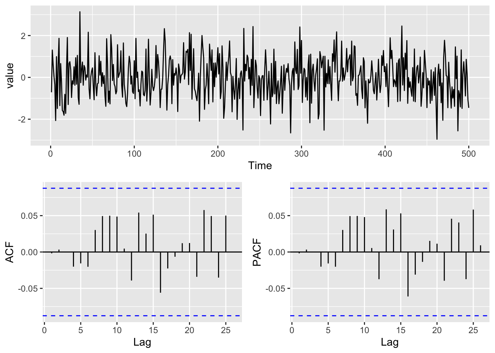
Those look lovely. And we can use the tsdiag function. That gives the same info as the residual plots above but also plots the p-values from the Ljung–Box test. Larger values of p suggest independence at that lag. It’s an ugly plot but a useful one:
tsdiag(arma11)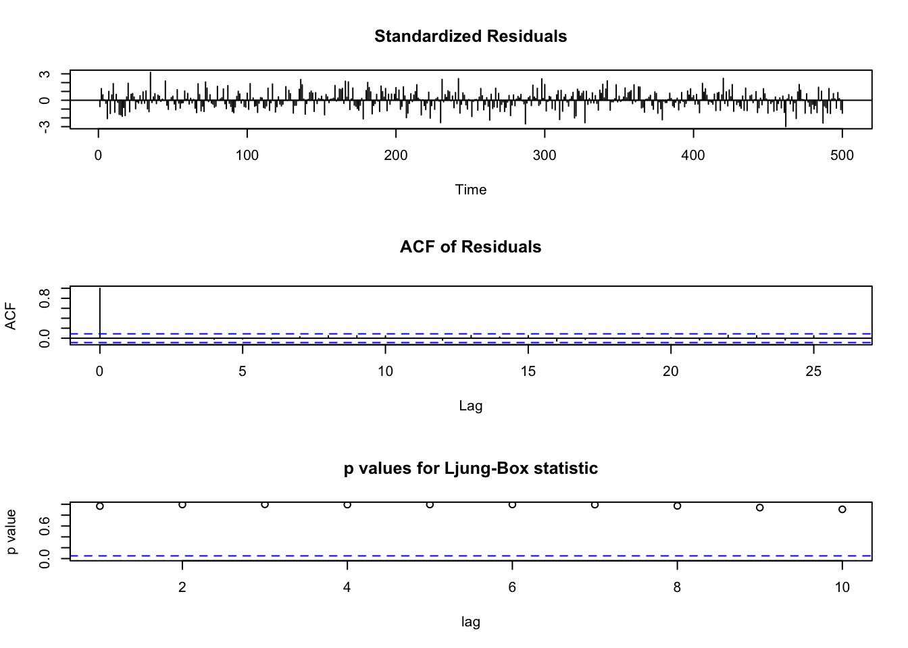
Let’s see how the ARMA(1,1) fits these data visually.
dat <- tibble(x=x,y=arma11$x,yhat=arma10$fitted)
dat %>% pivot_longer(cols=2:3) %>%
ggplot(mapping = aes(x=x,y=value,color=name)) +
geom_line() +
labs(x="Time")
Wow! Pretty impressive. The R\(^2\) on that model is excellent at 0.792
Note that while the BIC values indicated ARMA(1,1), some of those other models look pretty good! Why pick ARMA(1,1) over a different model? There is often not a “right” and we often have to be content with the “least wrong” model. Look at the ACF and PACF of the residuals of some of the other models. In general, simpler is better than more complicated. It all gets down to specifying this annoying question, “What are you trying to answer?”
Real data is always messier than simulated data. Let’s take a look at some.
Catherine Pfister and colleagues wrote a very nice paper in the Journal of Ecology a few years back. In the paper they looked at spatial and temporal autocorrelation in Salish Sea kelp abundance and linked it to oceanic drivers like sea surface temperatures. We might delve into that paper in more depth later – it’s a lovely study. See here for the paper and the data are archived here. I pulled out the sea surface temperature from Race Rocks, Canada which goes back to 1921 and is a great long, local time series. Let’s look at the temporal structure in these data.
sst <- readRDS("data/RaceRocksSST.rds")
p1 <- broom::tidy(sst) %>% ggplot(mapping = aes(x=index,y=value)) +
geom_line() + labs(x="Year",y=expression(degree~C),
title="Sea Surface Temperatures, Race Rocks, Canada")
p2 <- ggAcf(sst) + labs(title=element_blank())
p3 <- ggPacf(sst) + labs(title=element_blank())
gridExtra::grid.arrange(p1,p2,p3,layout_matrix=simpleLayoutMatrix)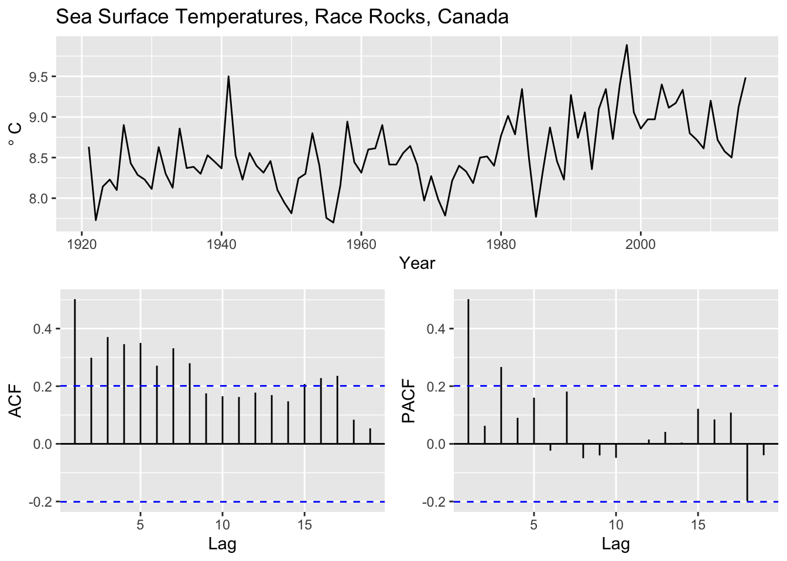
That is a complicated picture we have from the ACF and PACF plots. It certainly looks like there is a trend in the data so let’s difference it first and then fit some ARMA models.
sst_diff <- diff(sst)
p1 <- broom::tidy(sst_diff) %>% ggplot(mapping = aes(x=index,y=value)) +
geom_line() + labs(x="Year",y=expression(degree~C~Anomoly),
title="Differenced Sea Surface Temperatures, Race Rocks, Canada")
p2 <- ggAcf(sst_diff) + labs(title=element_blank())
p3 <- ggPacf(sst_diff) + labs(title=element_blank())
gridExtra::grid.arrange(p1,p2,p3,layout_matrix=simpleLayoutMatrix)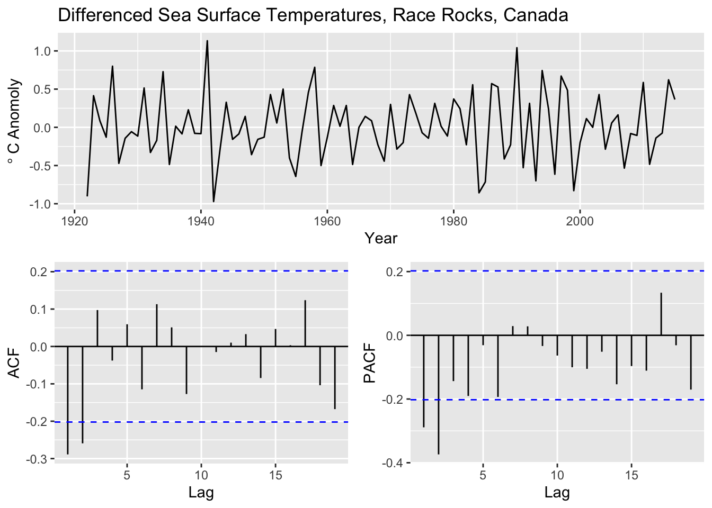
Still a complicated picture we have from the ACF and PACF plots with the differencing. Now for some ARMA models.
arma00 <- Arima(sst_diff,order = c(0,0,0))
arma10 <- Arima(sst_diff,order = c(1,0,0))
arma20 <- Arima(sst_diff,order = c(2,0,0))
arma01 <- Arima(sst_diff,order = c(0,0,1))
arma02 <- Arima(sst_diff,order = c(0,0,2))
arma11 <- Arima(sst_diff,order = c(1,0,1))
arma21 <- Arima(sst_diff,order = c(2,0,1))
arma12 <- Arima(sst_diff,order = c(1,0,2))
arma22 <- Arima(sst_diff,order = c(2,0,2))Note that we could have used the undifferenced data above and included a \(d\) term in the call to Arima. E.g., an AR(1) model with differencing would be Arima(sst,order = c(1,1,0)) which is the same as Arima(sst_diff,order = c(1,0,0)). I chose to do the differencing manually to be consistent with what we did above.
We can then evaluate each model by BIC.
armaBIC <- BIC(arma10,arma20,arma01,arma02,arma11,arma21,arma12,arma22,arma00)
armaBIC df BIC
arma10 3 115.73152
arma20 4 104.65047
arma01 3 96.01018
arma02 4 94.13930
arma11 4 95.68852
arma21 5 99.32558
arma12 5 96.53865
arma22 6 100.78066
arma00 2 119.76488From the BIC values it looks like the ARMA(0,2) model and the ARMA(1,1) models are both quite good. And ARMA(0,1) is appealing too.
Here is the ARMA(1,1) model.
arma02Series: sst_diff
ARIMA(0,0,2) with non-zero mean
Coefficients:
ma1 ma2 mean
-0.5718 -0.3205 0.0082
s.e. 0.1145 0.1217 0.0046
sigma^2 = 0.1336: log likelihood = -37.98
AIC=83.97 AICc=84.42 BIC=94.14Let’s take a closer look. First let’s look at the ACF and PACF of the residuals for the ARMA(0,2).
y <- arma02$residuals
p1 <- broom::tidy(y) %>% ggplot(mapping = aes(x=index,y=value)) +
geom_line() +
labs(x="Time")
p2 <- ggAcf(y) + labs(title=element_blank())
p3 <- ggPacf(y) + labs(title=element_blank())
gridExtra::grid.arrange(p1,p2,p3,layout_matrix=simpleLayoutMatrix)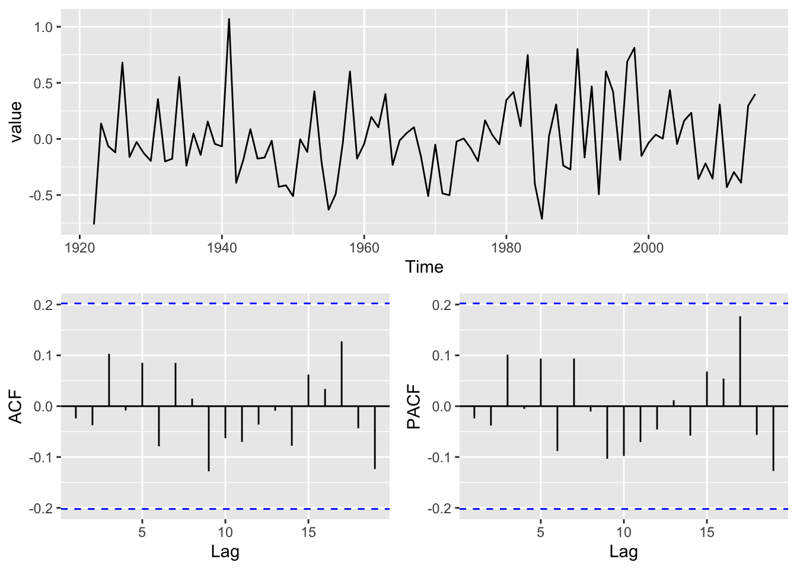
Those are clean.
So what do we do with this information? It does appear that these data follow a fairly complicated time-series model. Which one? Well there isn’t one right answer. The BIC indicated and ARMA(0,2) model and gives clean residuals. But the ARMA(1,1) has a good fit as does the ARMA(0,1). I think you can make an argument for any of those models here.
If these were my data, I’d really want to know more about the mechanisms that might create the patterns we see in the data. Pattern is all well and good but process is cooler.
When fitting ARMA models, you’re often faced with multiple competing options — all with decent fits. So how the heck do you decide which information criterion (IC) to use? AIC? BIC? AICc? Each one has its own logic and use case. Here’s a quick guide to help you choose:
| Criterion | Penalty for Complexity | Best For | Notes |
|---|---|---|---|
| AIC (Akaike Information Criterion) | (2k) | Prediction | May overfit; balances fit and complexity |
| BIC (Bayesian Information Criterion) | (k (n)) | Finding the “true” model | Stronger penalty on complexity |
| AICc (Corrected AIC) | AIC + small-sample correction | Small samples | Recommended when ( n / k < 40 ) |
In general:
AICc is often preferred for small sample sizes
AIC or BIC can be used for larger samples, depending on whether the focus is on prediction (AIC) or parsimony/inference (BIC). I like to fool myself into thinking I can get the “true” model. But, as in life, there isn’t one answer.
Use AIC:
Use BIC:
Use AICc:
You all recall the famous Lynx and Hare data from when you took ecology and learned about predator-prey interactions and Lotka-Volterra equations I bet. I grabbed these data from the ecostudy package and have them as a ts object. The data give the number of pelts (in thousands) for Lynx and Hare traded with the Hudson Bay Trading Company in 1845 to 1935.
LynxHare <- readRDS("data/LynxHare.rds")
str(LynxHare) Time-Series [1:91, 1:2] from 1845 to 1935: 19.6 19.6 19.6 12 28 ...
- attr(*, "dimnames")=List of 2
..$ : NULL
..$ : chr [1:2] "Hare" "Lynx"plot(LynxHare,main="Annual numbers of pelts in tousands")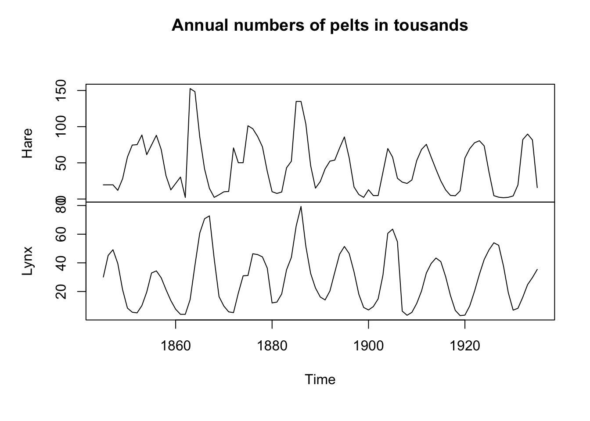
The adorable Snowshoe Hare is the primary food of the Canada Lynx and the these two species are closely linked by their population biology. Take a moment and write down how you can think about their population cycles in terms of their time-series properties. Can we try to understand how those populations might vary in terms of AR and MA processes? Do some wild and irresponsible speculation.
Now, model the Lynx pelt data as an ARMA process. Do some further wild and irresponsible speculation about what you found. How does your thinking about this famous data fit into your understanding of an ARMA model?
Write it all up and pass in a knitted R Markdown document. The last section of your document should include a reflection where you explain how it all went. What triumphs did you have? What is still confusing?